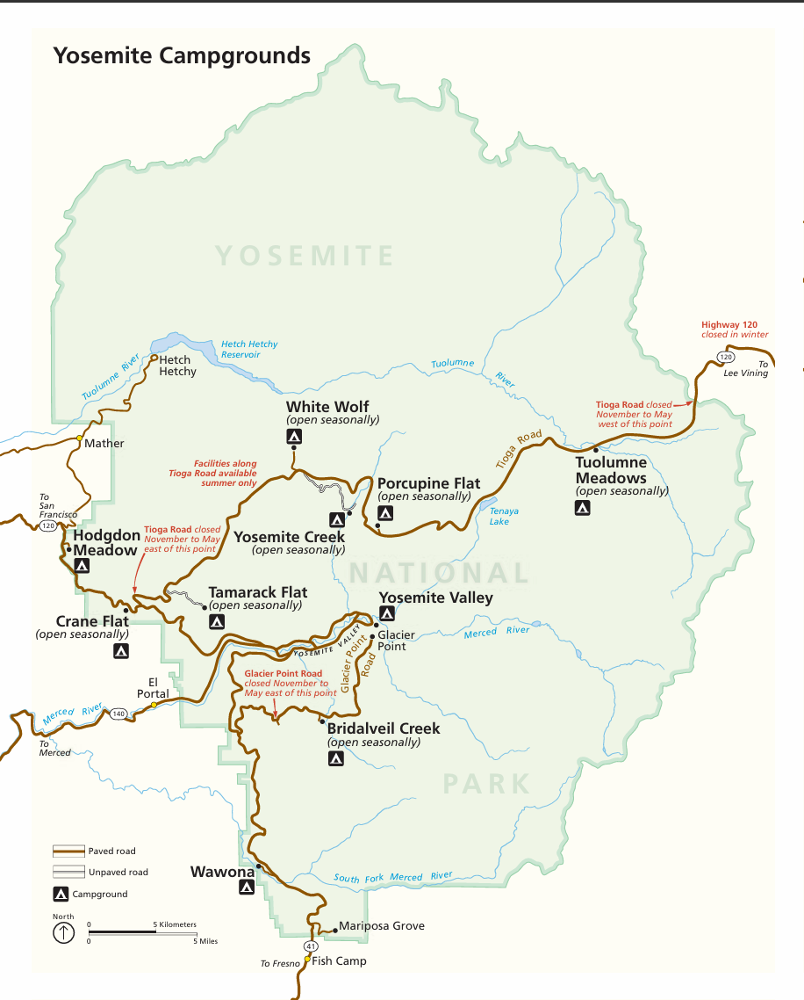

Safety Tips for Yosemite Road Trips
When driving in Yosemite National Park, safety is a top priority. Here are some important tips to help ensure a safe and enjoyable trip:
🛣️
1. Road Conditions
- Roads may be narrow, winding, and steep. Plan your route in advance.
- Winter roads can be icy—check forecasts and carry snow chains when needed.
- Stay updated on road closures and follow all traffic signs.
🐻
2. Wildlife Awareness
- Yosemite is home to bears, deer, coyotes—drive carefully and expect animals to cross.
- Never feed wildlife. Store food in bear-proof containers.
🚦
3. Driving Rules
- Obey all speed limits and use turnouts to allow passing.
- Never stop randomly on the road; use viewpoints and designated pullouts.
- Expect delays during peak season. Use the free shuttle service in the valley.
🧰
4. Be Prepared
- Bring maps, GPS, extra fuel, food, and water.
- Wear appropriate clothing and bring sun protection.
- Notify someone of your hiking plans in remote areas.
⚠️
5. Stay Alert
- Pay attention to surroundings, stay on marked trails, and avoid slippery rocks or waterfalls.
🐾
6. Bear Safety
- Store all scented items securely in bear-safe storage.
- Never leave food in your car overnight.
- If you encounter a bear, do not run. Back away slowly and keep distance.
🌦️
7. Weather & Signal Tips
- Summer: Strong sun—wear sunscreen and drink water. Watch for engine overheating.
- Winter: Expect snow and icy roads. Wear warm layers and be cautious of slipping.
- Spring/Fall: Unpredictable weather—bring rain gear and layered clothing.
📶
8. Cell Signal
- Signal is limited in many parts of the park—download offline maps in advance.
- Let someone know your itinerary and check-in times.
🛡️
9. Extra Safety
- Carry a whistle, basic first aid kit, and flashlight.
- Follow Leave No Trace principles and help preserve Yosemite's natural beauty.
Yosemite Campgrounds Map
This map shows major campgrounds throughout Yosemite National Park. Note that many are open seasonally, and some roads may be closed from November through May due to snow.
